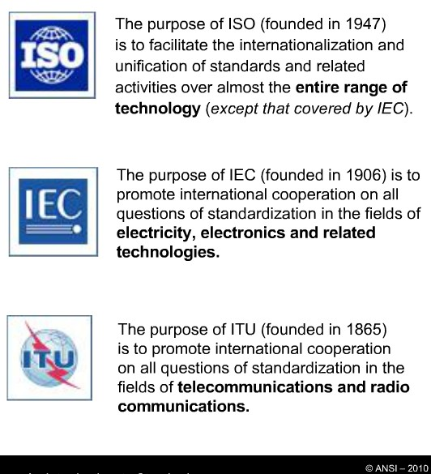

ESTANDARD
Primero debe quedar claro que un estándar es un documento técnico formal para productos, procesos, procedimientos y políticas. Estos estándares pueden ser escritos, regulados o adoptados por agencias del gobierno, por compañías PRIVADAS, instituciones de estandarización (como ANSI, ISO, IEC etc.), o por profesionales voluntarios de sectores privado y público.
Los estándares de consenso voluntario abarcan:
- Estándares basados en productos
- Estándares basados en desempeño
- Estándares basados en sistemas de gestión
- Estándares basados en certificación de personal
ANSI
ANSI no es un desarrollador de estándares ni certificador de productos, tampoco define qué puede ser o no estandarizado. ANSI es una institución que acredita el correcto proceso para la estandarización de un consenso de actividades de producción o desarrollo de productos en mercados ya desarrollados o en nuevos mercados para sus miembros asociados o los que deseen adoptarla. Cuenta con desarrolladores (pueden ser voluntarios y que luego de un proceso pasan a ser acreditadas por ANSI) de estándares.
“La mejor manera de predecir el fututo es echando una mano dándole forma.”
ISO E IEC
Además ANSI, a través de su comité nacional USNC, es representante oficial de Estados Unidos en las organizaciones globales de estandarización internacional como ISO e IEC.
ISO e IEC promueven la participación global mediante miembros representantes nacionales por país, quienes pueden participar en comités o grupos de trabajo en sus modalidades de miembro activo “P” o miembro de observador “O”. Pueden participar en comités técnicos (TCs), Subcomités (SCs), o en grupos de trabajo (WGs).
Fuente: StandarsLearn.org.